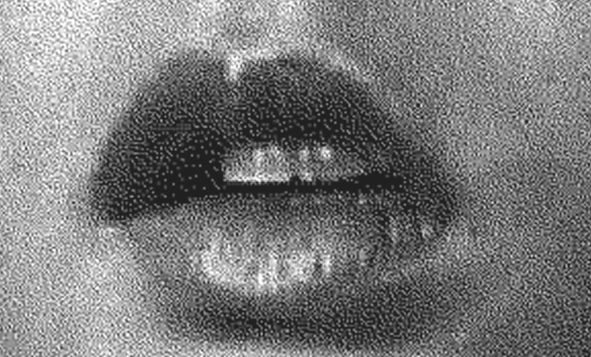
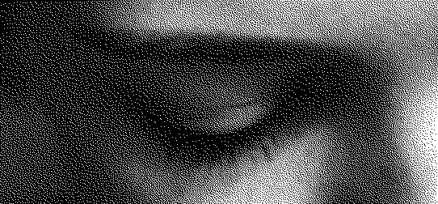
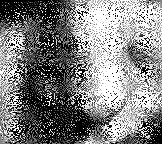
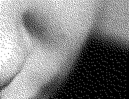
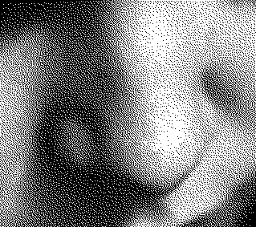
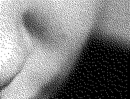
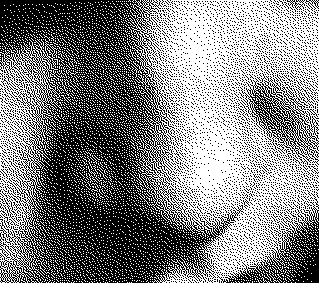
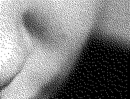
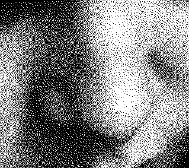
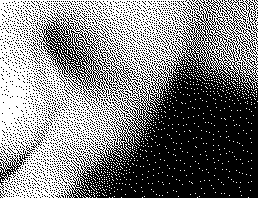

 









Maria,
empregada
Maria,
dona de casa
Maria,
esposa dedicada
Maria,
mulher calada
Maria,
sem contrato
Maria,
cozinheira do lar
Maria,
cuidadora
Maria,
mãe de filhos
Maria,
esposa exemplar
Maria,
ama
Maria,
costureira do lar
Maria,
mulher recatada
Maria,
mulher a dias
Maria,
mulher exausta
QUALQUER UM DESTES PAPÉIS É VÁLIDO, DESDE QUE SEJA UMA ESCOLHA TUA

Novas Cartas Portuguesas, Maria Isabel Barreno, Maria Teresa Horta e Maria Velho da Costa, 1974

Big Eyes [Olhos Grandes], 2014

Your body is a battleground [O teu corpo é um campo de batalha], Barbara Kruger, 1989

Feia, Carolina Deslandes,
2025
12 de janeiro 2026
A Mattel lançou a primeira Barbie com autismo, desenvolvida com a Autistic Self Advocacy Network.A boneca inclui detalhes sensoriais e de comunicação, integrando o compromisso da marca com a inclusão e a diversidade.
6 de janeiro 2026
Em 2025, Portugal registou mais de 30 mil queixas de violência doméstica, mas apenas cerca de 4.200 resultaram em condenações, revelando dificuldades no acesso à justiça para as vítimas.
Ver entrevistas